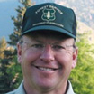

|
|
|
AN INTERVIEW WITH RICK CABLES
Making the Watershed Connection
|

"A lot of people do not understand that the health of the watershed is critical to
water resources. We want to connect the water customers to their watershed."
|
Q: You've pointed out the enormous economic value of water that originates in the National Forests of the
Rocky Mountain Region. And you've also noted that about three million acres of Forest Service land alone have been
affected by the mountain bark beetle. How do you expect the forest damage caused by the beetle to affect efforts not
just to maintain but restore the healthy headwaters needed for our water supplies?
RC: This is an event on an incredible scale, and there are two main effects. The first is the significantly
increased potential for catastrophic wildfire. As the trees killed by the beetle fall down, and that is starting to
happen, it creates a large amount of fuel close to the soil. When that burns, the heat damages the soil. It sterilizes
the top few inches, and that makes it difficult for new vegetation to grow. The heat also seals and hardens the soil,
it creates what are called hydrophobic soils. Runoff gains speed on that surface, which allows it to pick up more
sediment. The increased erosion clogs streams and reservoirs. This happened after the Buffalo Creek fire; it damaged
the water infrastructure for Denver Water.
The second effect is more long-term and less certain. We don't know the type and composition of the future forest. It
was contiguous lodgepole. In a pre-climate-change context, we'd expect regeneration. Now we're not sure. What will be
the band elevation of lodgepole? Will it move up the mountain? Will aspen outcompete lodgepole? This affects the
ability of the watershed to hold snowpack. Aspen loses its leaves in the winter, which translates into an earlier
snowmelt. In a shadier conifer forest, the snow melts more slowly, it comes off the mountain in a different way. So,
the beetle and climate change will change the hydrologic regime of the watershed.
Q: What do you think it would take for decision makers at all levels to address water issues from source to
final use, especially with respect to headwaters?
RC: I think the first thing is building awareness and understanding that the mountains are the source of the
water. In our fragmented, sound-bite society, urban people turn on the tap and the water comes out. People have less
connection to natural resources. I believe a lot of people do not understand that the health of the watershed is
critical to water resources. We're working with Front Range water providers to increase that understanding. In the
long range, we want to connect the water customers to their watershed.
The second factor would be having a real project and success that demonstrates results. The interior West will be the
part of the country most dramatically affected by climate change. It's arid, it's high, and the growing season is short.
It doesn't have the flexibility and resilience of other areas. There is a potential for a watershed maintenance fee and
of putting together a partnership and resources from federal funding, water providers, and others to focus on areas that
need restoration. If we can build a successful watershed health and maintenance project with tangible results in full
collaboration with water providers, it would be something we could show to people in other parts of the country.
Q: How do you think the Carpe Diem Project is contributing or can contribute to this process?
RC: A thing I love about Carpe Diem is that it already connects water and climate change, and I think we need
to continually talk about this connection. I also like the kind of people the Carpe Diem Project pulls together. The
solutions are going to require a lot of dialogue, and Carpe Diem connects academics, NGOs, scientists, water
professionals — it's a collage of experienced, smart folks trying to get their heads around these issues. Carpe
Diem functions as a catalyst, which I think is huge. Another factor is the way Carpe Diem lays out its priorities. The
beauty of something like the Colorado River project [Carpe Diem's lead initiative on the Colorado River] is the way it
ties the whole system together. Not that many entities are looking across that broad range of landscape. Carpe Diem is
trying to look at it in a holistic way, and it gives voice to some concepts in a way that others can't.
RICK CABLES is Regional Forester for the US Forest Service Rocky Mountain Region. As Regional Forester he is
responsible for the administration of over 22 million acres in 17 National Forests and 7 National Grasslands, and
cooperative efforts with state and private landowners in Colorado, Kansas, Nebraska, South Dakota and eastern Wyoming.
With over 30 years in the Forest Service, he has also served as Regional Forester for the Alaska Region.
|
|
|